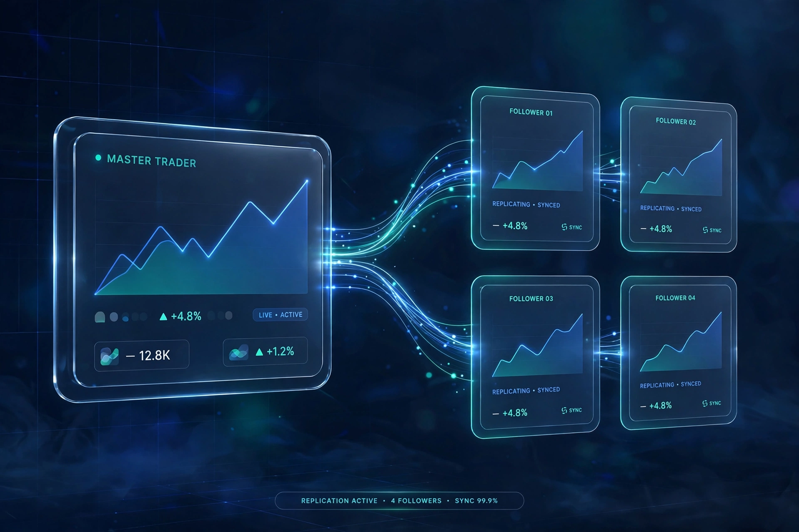
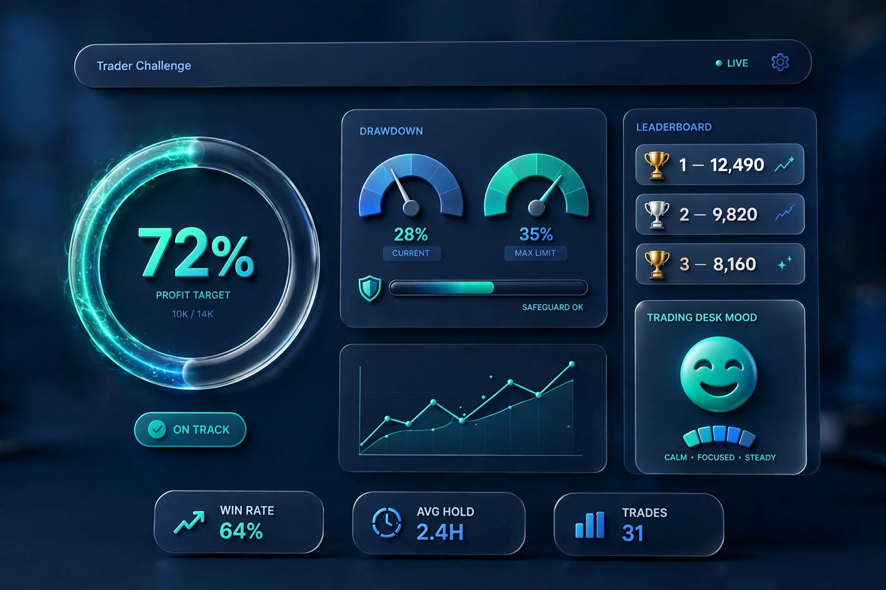
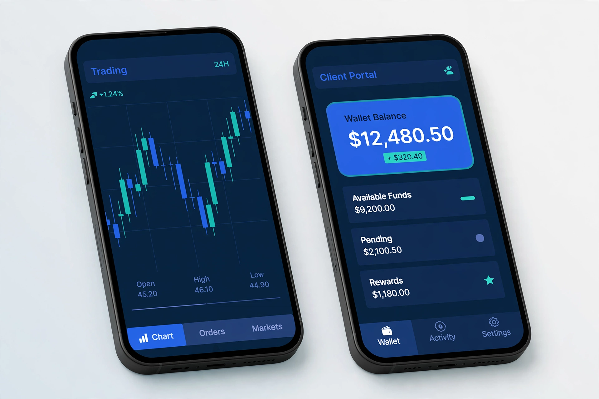
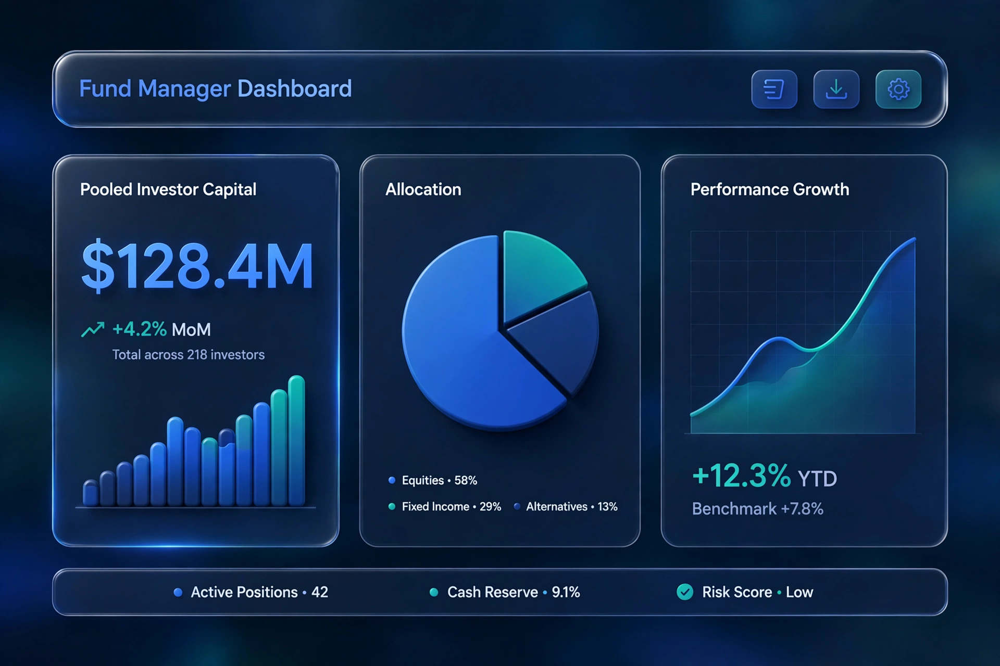
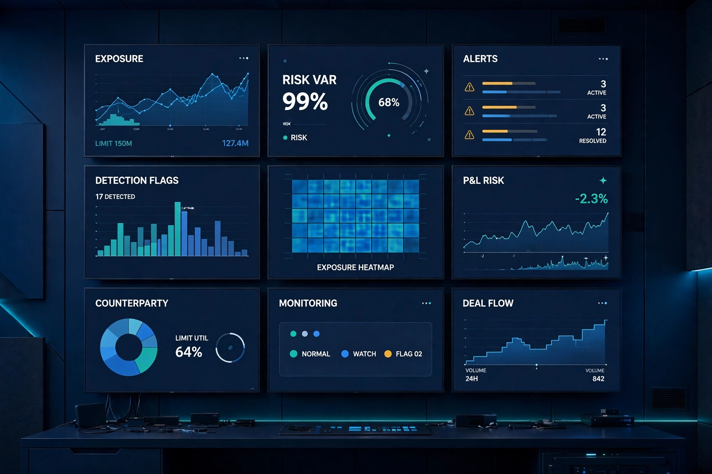

What a good forex CRM actually does all day
Most CRM demos show screens. This one shows the work: leads, KYC, deposits and the handoffs between teams.
Read the article →Practical writing on CRM, onboarding, trading products and licensing — from the team that builds the software.
Most CRM demos show screens. This one shows the work: leads, KYC, deposits and the handoffs between teams.
Read the article →
The drop-off is rarely the document. It's the waiting, the unclear request and the second upload.
Read the article →
Drawdown next to gain, fees next to returns — the numbers that keep followers around.
Read the article →
Targets, drawdown rules and time limits — how to set rules that feel fair and still protect the firm.
Read the article →
Banking, reputation, cost and timeline — the trade-offs founders usually discover too late.
Read the article →
What a white-label client app changes about deposits, support tickets and retention.
Read the article →
Three ways to let clients follow a strategy — and the very different promises each one makes.
Read the article →Reconciliation, payout approvals and the status messages that stop support tickets before they start.
Read the article →
What each plugin family does, who needs it and what happens if you skip it.
Read the article →
Why brokers with an active feed keep clients longer — and how moderation makes or breaks it.
Read the article →Book a demo and see the CRM, apps and trading tools live.
Book your demo →